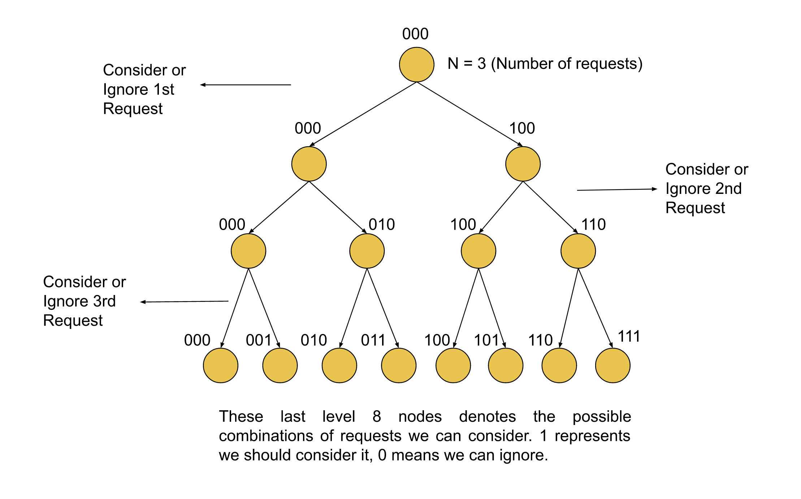

We have NN buildings, each having some number of employees; there are some requests by the employees to get transferred from one building to another. We need to return the maximum number of requests that we can accommodate, considering the employee change count in each building should be zero, i.e. if one employee leaves a building, then some other employee should enter it too.
The most important observation is that the total requests could be at a max of 1616. Hence, trying out all the 2162^{16} possibilities could be a possible solution. We have 1616 requests, and for each one, we can have two options either to consider this request and move the employees or don't consider it and move to the next request. This is similar to the classic 0/1 knapsack problem, as for each request, we can either take it (1) or not (0). We will discuss two approaches, one the recursive and other iterative.
Intuition
As we discussed, each request has two options; the first is to accept this and move the employee in request [x,
y] from building x to y and the second is to ignore it. Since, in the end, we need
to check if the change in each building is zero, we need to have an array where the indices for each building will
store the current employee count that has entered or left it.
For every request [x, y] that we consider, we will decrement the count for the index x in
the array and increment the count for y denoting that the number of employees in the building
x has increased by one and similarly for y it got decreased by one. When we ignore a
request, we don't need to do anything except move on to the next request and repeat the same process until we have
reached the end of requests.
Once we iterate over all the requests, we will then check the count for each building, and if it's zero for all, we will count the number of requests we considered in this request and update the maximum requests we have considered so far without violating the constraint. In the end, we can just return the maximum number of requests we considered in a combination.
Algorithm
Initialize answer to 0; this will store the maximum requests we can consider.
Initialize an array indegree of size NN
with all values as 0. This array will store the employee change count for each building.
Start the recursion with index and count as 0. The count
here is the number of requests we have considered in the current combination, for each index:
i. If we have iterated over all the requests, check if all values in indegree are zero. If yes,
update the variable answer by comparing it to count. If all values aren't zero,
return.
ii. For the first option, when we consider this request, update the indegree for both the
buildings the current request involves. And move on to the next request with count as count + 1.
iii Revert the changes in indegree for the request at index; this is the
backtracking step.
iv. For the second option, where we ignore the request, make the recursion call with the following index
without changing the count.
Return answer.
Implementation
Java
class Solution {
public int maximumRequests(int n, int[][] requests) {
int answer = 0;
for (int mask = 0; mask < (1 << requests.length); mask++) {
int[] indegree = new int[n];
int pos = requests.length - 1;
// Number of set bits representing the requests we will consider.
int bitCount = Integer.bitCount(mask);
// If the request count we're going to consider is less than the maximum request
// We have considered without violating the constraints; then we can return it cannot be the answer.
if (bitCount <= answer) {
continue;
}
// For all the 1's in the number, update the array indegree for the building it involves.
for (int curr = mask; curr > 0; curr >>= 1, pos--) {
if ((curr & 1) == 1) {
indegree[requests[pos][0]]--;
indegree[requests[pos][1]]++;
}
}
boolean flag = true;
// Check if it doesn;t violates the constraints
for (int i = 0; i < n; i++) {
if (indegree[i] != 0) {
flag = false;
break;
}
}
if (flag) {
answer = bitCount;
}
}
return answer;
}
}
C++
class Solution {
public:
int maximumRequests(int n, vector>& requests) {
int answer = 0;
for (int mask = 0; mask < (1 << requests.size()); mask++) {
vector indegree(n, 0);
int pos = requests.size() - 1;
// Number of set bits representing the requests we will consider.
int bitCount = __builtin_popcount(mask);
// If the request count we're going to consider is less than the maximum request
// We have considered without violating the constraints; then we can return it cannot be the answer.
if (bitCount <= answer) {
continue;
}
// For all the 1's in the number, update the array indegree for the building it involves.
for (int curr = mask; curr > 0; curr >>= 1, pos--) {
if (curr & 1) {
indegree[requests[pos][0]]--;
indegree[requests[pos][1]]++;
}
}
int flag = 1;
// Check if it doesn;t violates the constraints
for (int i = 0; i < n; i++) {
if (indegree[i]) {
flag = 0;
break;
}
}
if (flag) {
answer = bitCount;
}
}
return answer;
}
};
Complexity Analysis
Here, NN is the number of buildings, and MM is the number of requests.
Time complexity: O(2M∗N)O(2^M * N).
We iterate over every two possibilities for each of the MM requests; this is equal to 2M2^M possibilities. For the leaf nodes, which are O(2M−1)O(2^{M-1}), we will iterate over NN buildings to check if the employee change is zero. Therefore the total time complexity would be O(2M∗N)O(2^M * N).
Space complexity: O(N+M)O(N + M).
The array indegree is of size NN,
and there would be some stack space as well for the recursion. The maximum number of active stack calls
would equal MM, i.e.
when all the requests call would be active. Hence the total space complexity would be O(N+M)O(N + M).
Intuition
We can solve the problem iteratively as well; all we need is a way to iterate over every possible combination of requests that we can consider. We know the number of requests can only go up to 1616, so we can use NN bits to represent the state of NN requests. The ithi^{th} bit will be set in the combinations when we consider it; otherwise, it will be zero. Since the number 2162^{16} is well within the integer limit, we will use an integer to denote the state of a combination.
All the integers from 00 to 216−12^{16} - 1 represent
all the possible combinations of requests that we can consider. Each number is a possible combination that we can
check if it violates the constraints, i.e. the employee change count should be 0 after considering the
requests in this number. Therefore, in this approach, we will iterate over these numbers, considering them as the
possible combinations of requests we will consider. For all those combinations that don't violate the constraints,
we will update the variable answer with the number of 1s (the number of requests we
considered) in the bitwise representation.

Algorithm
Initialize answer to 0; this will store the maximum request we can consider.
Iterate over the numbers from 0 to requests.size() - 1, for each number
mask:
i. Initialize the array indegree of size NN
with all values as 0.
ii. Store the count of set bits in mask in the variable bitCount.
iii. If bitCount < answer, return immediately as this couldn't be a better answer.
iv. Iterate over the bits in mask, and for each set bit, update the array indegree
for the building it involves.
v. Iterate over each building and check if the value in the array indegree is zero; if it is,
then update the variable answer to bitCount.
Return bitCount.
Implementation
Java
class Solution {
int answer = 0;
void maxRequest(int[][] requests, int[] indegree, int n, int index, int count) {
if (index == requests.length) {
// Check if all buildings have an in-degree of 0.
for (int i = 0; i < n; i++) {
if (indegree[i] != 0) {
return;
}
}
answer = Math.max(answer, count);
return;
}
// Consider this request, increment and decrement for the buildings involved.
indegree[requests[index][0]]--;
indegree[requests[index][1]]++;
// Move on to the next request and also increment the count of requests.
maxRequest(requests, indegree, n, index + 1, count + 1);
// Backtrack to the previous values to move back to the original state before the second recursion.
indegree[requests[index][0]]++;
indegree[requests[index][1]]--;
// Ignore this request and move on to the next request without incrementing the count.
maxRequest(requests, indegree, n, index + 1, count);
}
public int maximumRequests(int n, int[][] requests) {
int[] indegree = new int[n];
maxRequest(requests, indegree, n, 0, 0);
return answer;
}
}
C++
class Solution {
public:
int answer = 0;
void maxRequest(vector>& requests, vector& indegree, int n, int index, int count) {
if (index == requests.size()) {
// Check if all buildings have an in-degree of 0.
for (int i = 0; i < n; i++) {
if (indegree[i]) {
return;
}
}
answer = max(answer, count);
return;
}
// Consider this request, increment and decrement for the buildings involved.
indegree[requests[index][0]]--;
indegree[requests[index][1]]++;
// Move on to the next request and also increment the count of requests.
maxRequest(requests, indegree, n, index + 1, count + 1);
// Backtrack to the previous values to move back to the original state before the second recursion.
indegree[requests[index][0]]++;
indegree[requests[index][1]]--;
// Ignore this request and move on to the next request without incrementing the count.
maxRequest(requests, indegree, n, index + 1, count);
}
int maximumRequests(int n, vector>& requests) {
vector indegree(n, 0);
maxRequest(requests, indegree, n, 0, 0);
return answer;
}
};
Complexity Analysis
Here, NN is the number of buildings, and MM is the number of requests.
Time complexity: O(2M∗N)O(2^M * N).
We iterate over every two possibilities for each of the MM requests; this is equal to 2M2^M possibilities. For the leaf nodes, which are O(2M−1)O(2^{M-1}), we will iterate over NN buildings to check if the employee change is zero. Therefore the total time complexity would be O(2M∗N)O(2^M * N).
Space complexity: O(N)O(N).
The array indegree is of size NN.
Hence the total space complexity would be O(N)O(N).